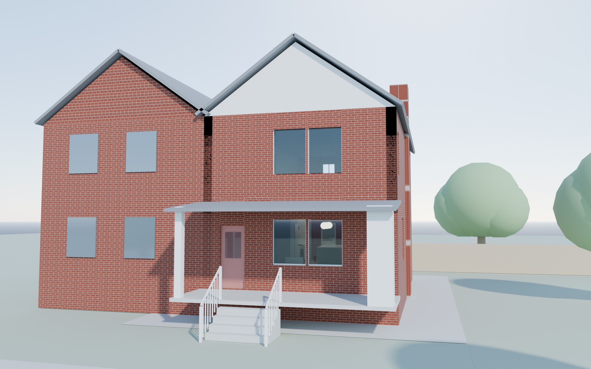
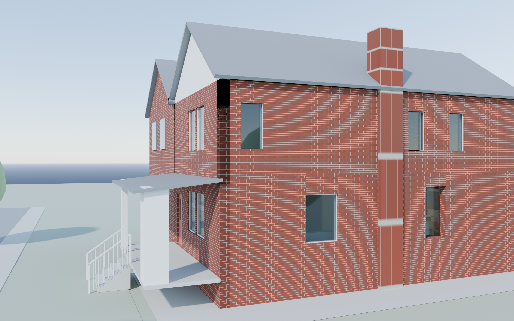
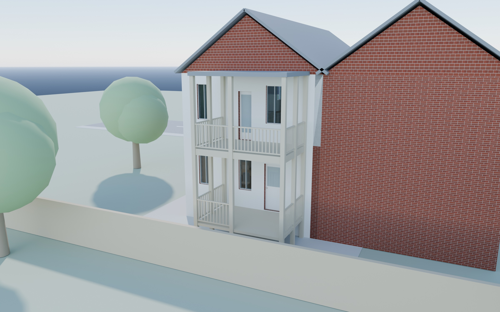
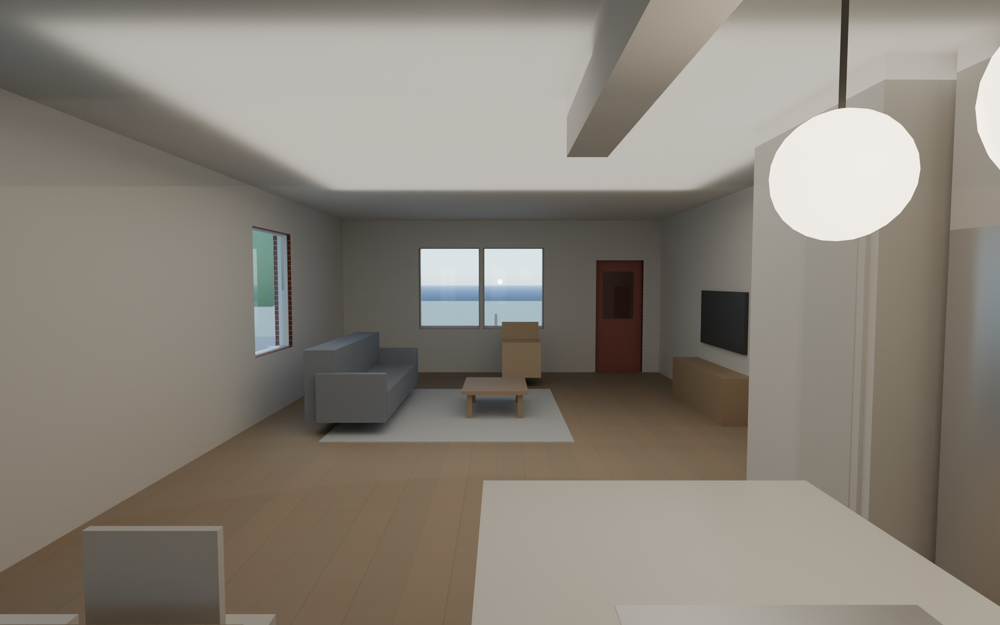

View
Layers
Drag to rotate. Right-drag or two fingers to pan. Scroll or pinch to zoom.
What is drawn and what is assumed
- From the approved plans: rear kitchen zone, rear wall door and windows, right-wall window, the 12' × 8' two-level rear porch, and the 21' building width. The highlight button colors these teal.
- From your street photos: brick exterior, pitched gable roof with a gable facing the street, brick chimney on the right slope, front porch with shed roof and white railed steps, red front door, paired windows, and the window rows on the right wall. Sizes and spacing are estimated from the photos.
- Not available: the existing floor plan (A1.0) is not in the PDF, so the house depth (about 38 ft), interior walls outside the kitchen, and window sizes outside the plan are my estimates. Finishes are placeholders.
Renderings

Front. Brick front with the porch and steps, following the street photo.
Front and right side. Right wall with the chimney and window rows from the side photo.
Rear and porch. The approved two-level porch on the rear wall.
Living area from the kitchen. Furniture is illustrative; the drawings do not show this room.